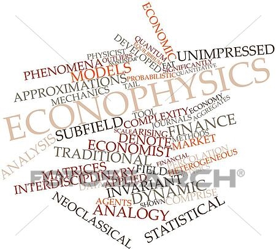

Fisika adalah ilmu alam yang mempelajari materi, konstituen fundamentalnya, gerak dan
perilakunya melalui ruang dan waktu, dan entitas energi dan gaya terkait
Fisika adalah salah satu disiplin ilmu yang paling mendasar, dengan tujuan utamanya adalah untuk
memahami bagaimana alam semesta berperilaku. Physics-Wikipedia. Fisika komputasi adalah studi dan
implementasi analisis numerik untuk memecahkan masalah dalam fisika yang teori
kuantitatifnya sudah ada.
Econophysics adalah bidang penelitian interdisipliner heterodoks, menerapkan teori dan metode yang
awalnya dikembangkan
oleh fisikawan untuk memecahkan masalah di bidang ekonomi, biasanya yang termasuk ketidakpastian atau
proses stokastik
dan dinamika nonlinier. Beberapa penerapannya untuk studi pasar keuangan juga telah disebut keuangan
statistik yang
mengacu pada akarnya dalam fisika statistik. Econophysics terkait erat dengan fisika sosial.

Algoritma & Pemrograman Komputer
Algoritma merupakan sekumpulan instruksi yang terstruktur dan terbatas yang diimplementasikan kedalam bentuk program
komputer untuk menyelesaikan suatu masalah komputasi tertentu.Dalam matematika dan ilmu komputer, algoritme adalah
prosedur langkah-demi-langkah untuk penghitungan. Algoritme digunakan untuk penghitungan, pemrosesan data, dan penalaran
otomatis.
Pemrograman komputer adalah proses melakukan perhitungan tertentu (atau lebih umum, mencapai hasil komputasi tertentu),
biasanya dengan merancang dan membangun program komputer yang dapat dieksekusi. Pemrograman melibatkan tugas-tugas
seperti analisis, menghasilkan algoritma, profiling akurasi algoritma dan konsumsi sumber daya, dan implementasi
algoritma (biasanya dalam bahasa pemrograman yang dipilih, biasanya disebut sebagai coding).